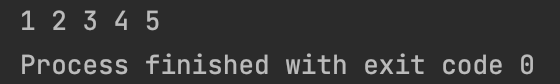

<meta charset="utf-8">
<html lang="ko">
<head>
    <link rel="stylesheet" type="text/css" href="./../style.css" />
    <title>Chap07. 큐, 연결 리스트 기반의 큐</title>
</head>
<body id="tt-body-page" class="">
<div id="wrap" class="wrap-right">
    <div id="container">
        <main class="main ">
            <div class="area-main">
                <div class="area-view">
                    <div class="article-header">
                        <div class="inner-article-header">
                            <div class="box-meta">
                                <h2 class="title-article">Chap07. 큐, 연결 리스트 기반의 큐</h2>
                                <div class="box-info">
                                    <p class="category">윤성우의 열혈 자료구조</p>
                                    <p class="date">2022-04-11 16:14:44</p>
                                </div>
                            </div>
                        </div>
                    </div>
                    <hr>
                    <div class="article-view">
                        <div class="contents_style">
                            <h2 data-ke-size="size26"><b>연결 리스트 기반의 큐 구현&nbsp;</b></h2>
<p data-ke-size="size16">연결 리스트 기반의 큐는 배열 기반의 원형 큐와 달리 고려해야할 점이 좀 줄어든다.</p>
<p data-ke-size="size16"></p>
<p data-ke-size="size16"><b>연결 리스트 기반의 큐의 Enqueue</b></p>
<p data-ke-size="size16">Enqueue 시에는 두가지 경우로 나뉜다.</p>
<p data-ke-size="size16">1. 첫 번째 노드를 삽입하는 경우&nbsp;</p>
<p data-ke-size="size16">- F,R 모두 새 노드를 가르킨다&nbsp;</p>
<p data-ke-size="size16">&nbsp;</p>
<p data-ke-size="size16">2. 두 번쨰 이후 노드를 삽입하는 경우</p>
<p data-ke-size="size16">- F는 그대로, R은 새 노드를 가르킨다&nbsp;</p>
<p data-ke-size="size16">- 노드 간의 연결을 위해 가장 끝에 있는 노드가 새 노드를 가르킨다&nbsp;</p>
<p data-ke-size="size16">&nbsp;</p>
<p data-ke-size="size16"><b>연결 리스트 기반의 큐의 Dequeue&nbsp;</b></p>
<p data-ke-size="size16">Dequeue의 경우 Enqueue와 달리 경우가 나뉘지 않는다.</p>
<p data-ke-size="size16">- F가 다음 노드를 가르키게 한다.</p>
<p data-ke-size="size16">- F가 이전에 가르키던 노드를 소멸시킨다.</p>
<p data-ke-size="size16">&nbsp;</p>
<p data-ke-size="size16">이렇게 할 경우 F와 R이 같은 노드를 가르킬때, Dequeue 연산을 하면 F는 NULL값을 가르키고, R은 아무것도 아닌 쓰래기값을 가르키게 된다.<b> 하지만 R이 쓰래기값을 가르켜도 상관이 없다.&nbsp;</b>왜냐면 큐가 비어있는지 확인할때에도 F가 NULL인지만 확인하고 다른 어떤 연산에서도 R의 값을 참조하는 경우가 없기 때문이다.&nbsp;</p>
<p data-ke-size="size16">&nbsp;</p>
<hr contenteditable="false" data-ke-type="horizontalRule" data-ke-style="style3" />
<p data-ke-size="size16"><b>ListBaseQueue.h</b></p>
<pre class="cpp"><code>/*
 * 연결 리스트 기반 큐 구현
 */

#ifndef CHAP07_LISTBASEQUEUE_LISTBASEQUEUE_H
#define CHAP07_LISTBASEQUEUE_LISTBASEQUEUE_H

#define TRUE 1
#define FALSE 0

typedef int Data;

typedef struct _node
{
    Data data;
    struct _node *next;
} Node;

typedef struct _lQueue
{
    Node *front;
    Node *rear;
} LQueue;

typedef LQueue Queue;

void QueueInit(Queue *pq);
int QIsEmpty(Queue *pq);

void Enqueue(Queue *pq, Data data);
Data Dequeue(Queue *pq);
Data QPeek(Queue *pq);

#endif //CHAP07_LISTBASEQUEUE_LISTBASEQUEUE_H
</code></pre>
<p data-ke-size="size16"><b>ListBaseQueue.c</b></p>
<pre class="xl"><code>#include &lt;stdio.h&gt;
#include &lt;stdlib.h&gt;
#include "ListBaseQueue.h"

// 최초에 front, rear 모두 NULL을 가르킴
void QueueInit(Queue *pq)
{
    pq-&gt;front = NULL;
    pq-&gt;rear = NULL;
}

// front의 위치만으로 큐가 비었는지 판단함
int QIsEmpty(Queue *pq)
{
    if(pq-&gt;front == NULL) return TRUE;
    else return FALSE;
}

void Enqueue(Queue *pq, Data data)
{
    Node *newNode = (Node*)malloc(sizeof(Node*));
    newNode-&gt;next = NULL;
    newNode-&gt;data = data;

    // 첫 번째 노드 삽입 시
    if(QIsEmpty(pq))
    {
        pq-&gt;front = newNode;
        pq-&gt;rear = newNode;
    }
    //
    else
    {
        // 마지막 노드가 새 노드 가르키도록
        pq-&gt;rear-&gt;next = newNode;
        // rear가 새 노드 가르키도록
        pq-&gt;rear = newNode;
    }
}

Data Dequeue(Queue *pq)
{
    Node *delNode;
    Data retData;

    if(QIsEmpty(pq))
    {
        printf("Queue Memory Error");
        exit(-1);
    }

    delNode = pq-&gt;front;
    retData = delNode-&gt;data;
    pq-&gt;front = pq-&gt;front-&gt;next;

    free(delNode);
    return retData;
}

Data QPeek(Queue *pq)
{
    if(QIsEmpty(pq))
    {
        printf("Queue Memory Error");
        exit(-1);
    }
    return pq-&gt;front-&gt;data;
}</code></pre>
<p data-ke-size="size16"><b>ListBaseQueueMain.c</b></p>
<pre class="reasonml"><code>#include &lt;stdio.h&gt;
#include "ListBaseQueue.h"

int main()
{
    Queue q;
    QueueInit(&amp;q);

    // Data Enqueue
    Enqueue(&amp;q, 1);
    Enqueue(&amp;q, 2);
    Enqueue(&amp;q, 3);
    Enqueue(&amp;q, 4);
    Enqueue(&amp;q, 5);

    // Data Dequeue
    while(!QIsEmpty(&amp;q))
    {
        printf("%d ", Dequeue(&amp;q));
    }
}
</code></pre>
<p><figure class="imageblock alignLeft" >
    <span data-lightbox="lightbox">
        
    </span>
    <figcaption></figcaption>
</figure></p>
<p data-ke-size="size16">&nbsp;</p>
<p data-ke-size="size16">&nbsp;</p>
                        </div>
                        <br/>
                        <div class="tags">
                            #자료구조 #C #Queue 
                        </div>
                    </div>
                </div>
            </div>
        </main>
    </div>
</div>
</body>
</html>
